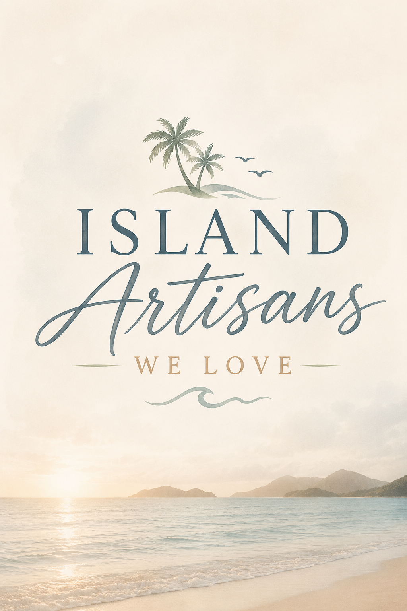

Featured This Month
The artisan we can't wait for you to meet

I get asked all the time — who ends up on this page? Here's the honest answer.
I look for shops that have been at it a while. Not just a season, not just a trend. The kind of place that's still there year after year because the work is right.
I look at what people say. Real customers, real reviews — the ones who came back for a second piece, or told their sister to go there.
I look for something different. If a shop's just doing what everyone else is doing, it's not for us. I want to feature places that make something you can only get from them.
And I ask around. The best shops are the ones the locals love, not just the ones tourists find. If islanders send their friends there, that's the shop I want to know about.
If there's a shop we should meet or if you know of one, send me an email at frankie@ironislanddesigns.com
— Frankie
The artisan we can't wait for you to meet
If you found a place worth knowing about — a shop, a craftsperson, an artisan we should meet — send Frankie an email. She's always looking.
Email Frankie